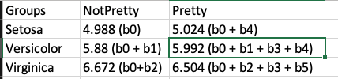

Lecture Videos
Week 3
2/9
- Univariate Regression 2
- HW 1 Due by 10am
2/11
- Partial Correlations Note: I say the words “correlation”, “semi partial correlation”, and “partial correlation” a million times in this video – so it turns into a bit of a tongue twister! I have edited the video so that it’s hopefully clear, but please reach out on Slack if there’s any part that is confusing.
- Zoom Check-in with Chan
- Recording of Zoom Check-in with Chan
Week 4
Week 5
2/25
- No new material
- Zoom Check-in with Violet
- Here are the review questions, created by Violet. You should do these practice problems before coming to Thursday’s review. (You can still attend if you haven’t completed them – but to get the most out of it, it’s best if you come prepared)
- Here is the recording from this check-in and here is the transcript of this session (note that you’ll need to download the transcript and open it as a text file)
Week 6
3/2
- Wellness Week 1; no new material
3/4
- Wellness Week 1; no new material
- Zoom Check-in with Shely
Week 7
3/9
- Exam 1 Opens at 10am
3/11
- Exam 1 DUE by 10am
Week 8
3/18
- Causal Models
- Zoom Check-in with Chan – so sorry I forgot to post the link!
- Recording of Zoom Check-in with Chan
Week 10
4/1
- Interactions III (Factorial ANOVA)
- Zoom Check-in with Shelly
- Recording of Zoom Check-in with Shelly
- I STRONGLY SUGGEST WATCHING THIS BEFORE EXAM 2
- Screenshots from our check-in: 

Week 11
4/6
- Exam 2 Opens at 10am
4/8
- Exam 2 DUE by 10am
Week 12
4/15
Week 13
4/20
- Logistic Regression/GLM Note that the video feed cut out half way through the recording, so my face disappears! Sorry about that! The audio should work just fine, though.
Week 14
4/29
- Repeated Measures/MLM Lecture given by our very own Violet Brown! Link takes you to her YouTube page.
- HW 5 Due by 10am
Week 15
5/4 – Last Day of Class!
5/6 – No Class
- HW 6 Due by 10am